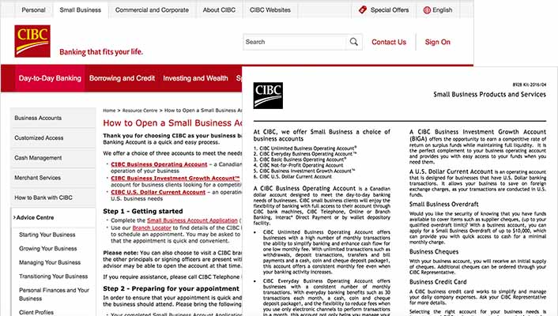
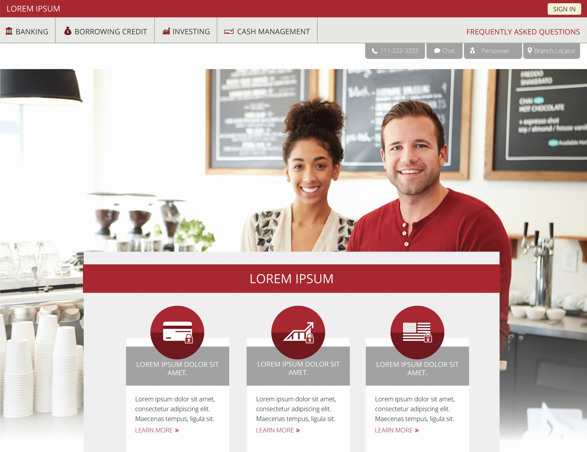

Canadian Imperial Bank of Commerce
This project was part of a proposal, by Capco, for the design of the online business account opening for the Canadian Imperial Bank of Commerce (CIBC). Capco was hoping to help CIBC make their account opening process available online, and used the small business account opening to showcase the value of their proposal. As the sole designer on the project, I was responsible for research, internal testing, wireframing, prototyping and visual design.
Technical Requirements
This project was used to demonstrate the value of moving account opening online. It required an in-depth understanding of the bank's legal and financial processes, and possible features or products included in the ideal account opening process.
Although this project had functional requirements, because it was not intended for implementation, there were no technical constraints. The features were created assuming that unlimited engineering resources would be available.
Market Research
Since CIBC did not have any online account opening (business or personal), there were no standard practices available to use as a foundation for these designs. In order to create a consistent experience across the CIBC site, research into the online account opening process of competitors and into the CIBC banking tools was conducted.
Due to the limited time frame, the research focused mainly on Canadian banks so that the final design would have the correct process. More focus was placed on including the necessary account opening steps over innovative tools/resources/upsell opportunities.
Market Research
User Flow
Based on the industry research, I created a simple flow that involved the standard entrypoint, features, and required information for small business account opening. This flow included a few additional upsells and a product recommendation tool to showcase the opportunities for profit that online account opening could provide.
Wireframe & User Testing
Using low fidelity mocks, I conducted some simple, iterative, internal user tests as a sanity check for the process I developed. These tests resulted in one main finding; the overwhelming amount user inputted data required for account opening made the experience feel too long and tedious.
Due to time constraints, the prototype made for these tests were simple pen, and internal testing was conducted with coworkers. Although they did not represent the core user demographic, they did correspond to the CIBC stakeholders who would view this prototype.
Visual Design
After iterating on the flow and the mocks, I finished this project by creating a high fidelity prototype for the CIBC executives. This prototype was developed as a microsite and was designed to follow the CIBC brand. You can walk through the full final designs here.
Final Web Design Landing Page
Specific focus was placed on reducing the appeared length of the input form experience. Although it was crowded with legal consent forms and financial information, it was designed for easy, interactive input.
Mobile Design
A very last minute ask from the Capco team was for a mobile web version of this process. Due to time constraints, only the account recommendation process was created. Particular care was taken to ensure that the form created for web did not overwhelm the user on mobile.

Final Mobile Designs
Next Steps
Although my internship at Capco ended before the final presentation was given, I have been told that the proposal was accepted, and that CIBC would using these designs to advertise the upcoming project internally.